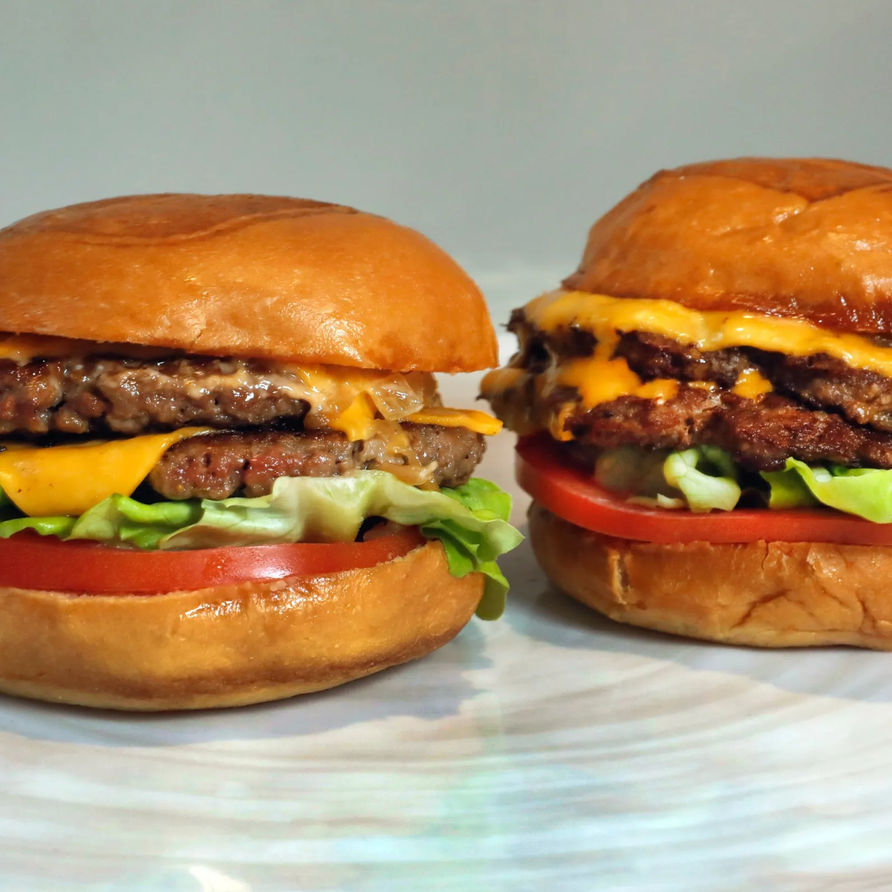
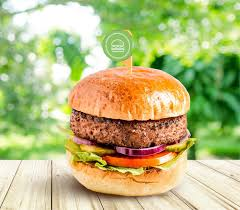
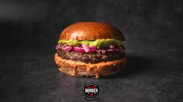
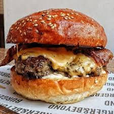
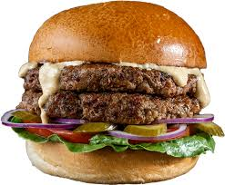
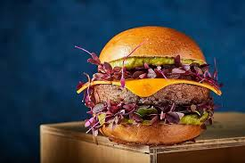

חברת ביונד מיט הוקמה בשנת 2009 על ידי איתן בראון, בלוס אנג'לס, ארצות הברית. החברה החלה למכור את מוצרי העוף המדומה שלה במרכולים ברחבי ארצות הברית באפריל 2013.[2][3] בשנת 2014 היא פיתחה מוצר דמוי בקר, והחל משנת 2016 משווקת לשוק הבינלאומי. בחודש יוני 2018 פתחה החברה את מפעל הייצור השני שלה בקולומביה, מיזורי, וכך הגדילה פי שלושה את שטח הייצור של החברה.[4] בשנת 2020 צפויה החברה להקים מפעל נוסף בהולנד על מנת לשרת את השוק האירופאי. נכון למאי 2019 הוערך שווי החברה בכ-3.8 מיליארד דולר,[5] בתחילת חודש יוני 2019 פרסמה החברה דו"ח כספים לרבעון הראשון של שנת 2019 וחשפה גידול של 230% במכירות בהשוואה לתקופה המקבילה בשנה שלפני כן. החברה הנפיקה את מניותיה בבורסת נאסד"ק שבניו יורק בתחילת חודש מאי 2019.
     